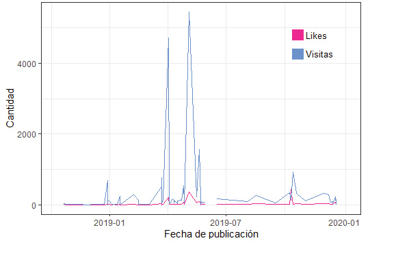
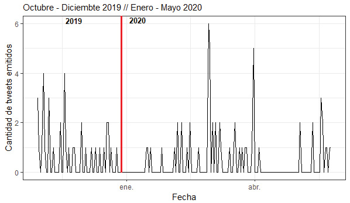
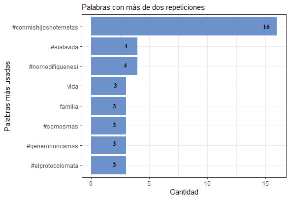
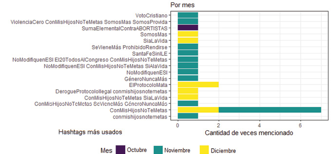
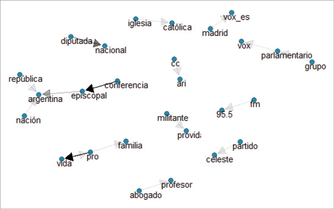
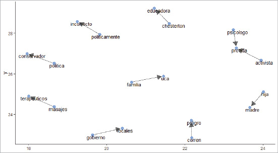
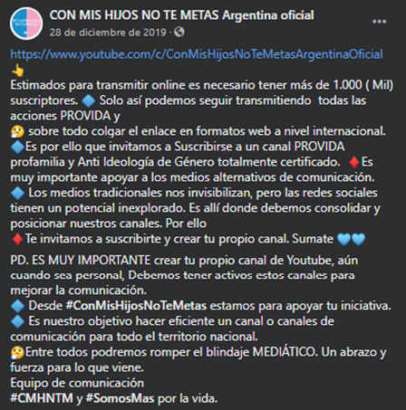
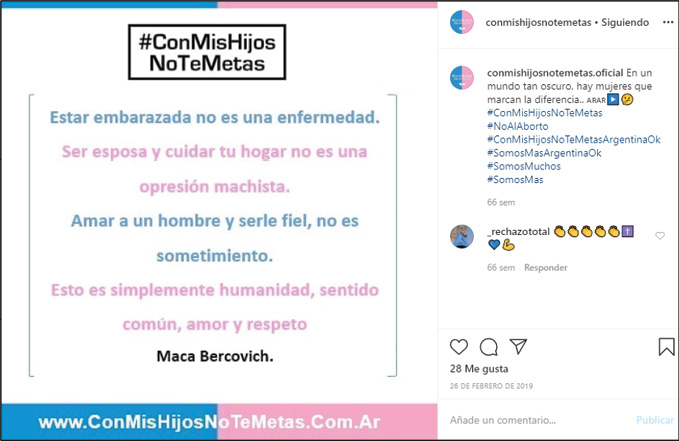

Geoffrey Pleyers y Antonio Álvarez-Benavides sostienen que los estudios sobre la acción colectiva deben superar dos separaciones: entre la vida privada y el compromiso político, y la dicotomía mundo virtual (internet, redes sociales) y el mundo de la vida, de la calles y de la política “real”. Según los autores: “Es precisamente en la hibridación entre la vida cotidiana y la política, entre los espacios virtuales y las plazas públicas, donde surgen nuevas subjetividades políticas y nuevas formas de ciudadanía, características de los movimientos sociales contemporáneos” (2019: 144). Para dar cuenta de la hibridación entre el mundo virtual y el mundo de la calle, en este capitulo se analizan las principales estrategias y usos de las redes sociales en las que Con Mis Hijos no te Meta está presente: YouTube, Twitter, Facebook e Instagram.
La denuncia de la ideología de género incluye al accionar de los medios de comunicación tradicionales.1 Los canales informativos hegemónicos son calificados como antidemocráticos porque, según los referentes provida, intentan acallar la voz de quienes “defienden la vida, la familia y los valores nacionales”. Desde esta perspectiva, tanto los medios masivos de comunicación como grupos corporativos han elegido defender la ideología de género porque, al igual que “los verdes”, se ven beneficiados del financiamiento internacional para impulsar e imponer dicha agenda. Sostienen que esta censura desinforma a la ciudadanía ya que oculta “la mayoría celeste, una mayoría silenciada”. Algunos referentes van más allá y declaran que “son los nuevos desaparecidos”, creados por los medios en democracia.
A la falta de financiamiento y la complicidad del Estado que desoye sus reclamos, se sumaría la censura de los medios masivos de comunicación para hacer creer que son una “minoría fundamentalista” cuando, en verdad, son una “mayoría silenciada” con “fundamentos científicos no ideologizados”. “Está comprada la prensa por aquellos que quieren imponernos la ideología, entonces no nos dan voz. Saben que no tienen razón por lo cual no quieren debatir y no nos sacan al aire, porque saben que sus argumentos se caen rápidamente”, afirmaba en la Jornada Internacional sobre los argumentos de la Ideología de género realizada en diciembre del 2018 Gabriel Flores Ciani (En los Medios no sale, 7/12/2018), el médico teólogo y una de las voces de profesionales más activa y militante del movimiento celeste desde su ONG “Amor en Acción”, que dirige junto a su esposa, la doctora Cecilia Otero.
Como propone la Juventud Provida, los medios de comunicación y las redes sociales son dos de las trincheras desde las cuales operaría el denominado “método gramsciano” (o neomarxismo). Para ocupar esos frentes de batalla y, ante el silenciamiento mediático, la estrategia propuesta es que cada militante se convierta en un periodista, que se construya información ciudadana por las redes sociales y los medios de comunicación alternativos para enfrentar a los poderes internacionales y los grandes conglomerados económicos que son los medios de comunicación.
Las redes sociales aparecen como la principal arma en esta batalla cultural: en ellas, se denuncia la desinformación hegemónica y se explica cómo opera la “colonización ideológica”, tiñéndose de celeste y rosa junto a los hashtags #ConMisHijosNoTeMetas y #SomosMás para presionar y advertir a las y los dirigentes políticos. La consigna de #SomosMás tiene dos connotaciones: por un lado, se refiere a “Somos Más Argentina”, una de las organizaciones aliadas de mayor alcance cuya sigla aparece junto a la iconografía de CMHNTM; por el otro, hace alusión a que las y los provida son mayoría.
En este frente de batalla, los aliados son los medios de comunicación alternativos. Los periodistas y comunicadores provida no escaparon a la coyuntura del debate por el aborto en 2018. En dicho contexto, actores con experiencia en los medios y como activistas celestes comenzaron a articular nuevos espacios afines donde tener voz: radio, prensa escrita, editoriales, producción de libros, entre otros. YouTube aparece como una vía con gran potencial de difusión ante las dificultades de llegar a los medios televisivos, en sus diferentes canales abundan las transmisiones en vivo de eventos, manifestaciones y encuentros de formación, que no tienen espacio en los noticieros de alcance masivo.
Aunque con alcances variados, las voces conservadoras están concentradas. Por ejemplo, Carlos Ialorenzi, junto a su esposa Myriam Mitrece, creó Buena Data como un medio independiente durante “el debate legislativo y social sobre la legalización del aborto frente a tanta información y datos falsos [para] investigar e informar con la verdad para debatir de manera seria”.2 Su objetivo en las primeras publicaciones era presentar la “contra información” a los datos provistos por los sectores pro aborto. Luego del debate, continuaron con su trabajo tejiendo nuevas redes: Buena Data tiene una columna en el diario La Prensa, espacio donde escribe frecuentemente su hijo Juan Pablo Ialorenzi; en el programa radial A viva voz en FM Amadeus 91.; editó el libro de Guadalupe Batallán Hermana date cuenta. No es revolución, es negocio; y en su sitio web se puede descargar folletería y material de consulta sobre ideología de género, datos y cifras sobre el aborto en la Argentina, explicaciones sencillas de leyes “contra la vida”, promoción de la línea 0800 de la Red Nacional de Acompañamiento a la mujer con embarazo vulnerable; y se ofrece un curso por WhatsApp sobre el proyecto de Interrupción Voluntaria del Embarazo discutido en 2018.
Uno de los materiales más impactante se titula “Aborto por selección de sexo” y va acompañado de la leyenda “A ellas también las queremos vivas, libres y sin miedo”. El folleto de solo dos hojas indica que el aborto profundiza la discriminación por sexo ya que, según un estudio realizado en Estados Unidos, las familias si pudieran escoger preferirían tener hijos varones a mujeres, razón por la que, entre el 2000 y el 2014, fueron “eliminadas” antes de nacer veinticuatro millones de mujeres gracias a los estudios que permiten identificar el sexo durante el embarazo. El flyer termina cuestionando a las organizaciones que dicen defender a las mujeres –sin nombrarlo se dirigen al movimiento #NiUnaMenos que reclama por una vida libre de violencias y cuyo lema es “Nos queremos vivas, libes y sin miedo”–, pero reclaman por el aborto poniendo en peligro la vida de las mujeres por nacer.3
El programa radial es conducido por Rolando Vera, un periodista de larga trayectoria, escritor del libo La Ola celeste, 8A, un libro que relata las diversas estrategias desplegadas durante el debate por el aborto para impedir la sanción de la ley. El libro al que autor define como “una obra de Dios” busca enviar un fuerte mensaje a la dirigencia política en un año electoral, advirtiéndole que la nación se construye sobre la vida y la familia y no votarán a quien no los represente. Otra de las conductoras es Arantxa Escribano, una comunicadora de Radio Nacional especialista en bioética.
Todos estos espacios impulsados por Ialorenzi buscan reafirmar la permanencia de la lucha por la vida y la familia, pero advirtiendo que es una lucha más amplia que se inscribe en la batalla cultural contra la ideología de género.
Otro medios alternativos aliados son el programa matutino El otro enfoque, un enfoque a la luz de la Biblia en la radio AM Armonía 1600, conducido por Fernando Lombardo; y el portal online de noticias Notivida, un “boletín de noticias que se relacionan con la promoción y la defensa de la vida humana y la familia”.4 Desde una perspectiva jurídica, encontramos normativa nacional e internacional relativa a la protección de la vida, la constitución nacional y las votaciones nominales de las y los legisladores nacionales sobre leyes que atañan a la familia y a la vida.
En YouTube dos espacios fueron creados en el marco del debate por la legalización de aborto: el canal de noticias En los Medios no sale, que oficia de canal de noticias oficial de CMHNTM transmitiendo en vivo sus intervenciones públicas; y la productora audiovisual de contenidos provida y profamilia, Faro Films, dirigida por Patricio Dondo, Nicolás Canate (militantes del Frente Joven) y Luis María Pichinali. Faro Film realiza producciones de mayor calidad que el anterior canal, ampliando su mirada a la lucha provida internacional. Asimismo, produjo una serie de documentales en apoyo a la campaña #ConAbortoNoTeVoto, en los que se presenta a las y los candidatos de cada provincia al Congreso Nacional en las elecciones del 2019, y su postura frente al aborto.
Pero además de estos medios ciento por ciento provida, los canales oficiales de CMHNTM replican, tanto en la red social de los videos como en Facebook, videos cortos de programas televisivos tradicionales como el canal América y, en menor medida, TN, del grupo Clarín. Estas publicaciones tienen una doble función: primero, refuerzan los argumentos anti-ideología de género y denuncia del colonialismo del “nuevo orden mundial” –uno de los periodistas más citado es el conservador Eduardo Feinmann–; y segundo, exponer cómo los grandes medios de comunicación han sido cooptados por los sectores abortistas mostrándose imparciales en las entrevistas y cobertura de sus eventos e intervenciones públicas.
En la actualidad, las redes sociales son un espacio de encuentro de socialización con pares interconectados y una arena de intervención política, en tanto y en cuanto se han convertido en la principal vía de acceso a noticias, información política de manera incidental y de exposición pública (Calvo y Aruguete, 2020). Los políticos encuentran en ellas una arena de bajo costo para personalizar su relación con el electorado; y los movimientos sociales conservadores, ¿cómo utilizan esta herramienta para conectar con sus militantes, difundir información acerca de su causa y movilizar a sus bases?
Antes de avanzar con la presentación de los resultados de la etnografía en lo digital (Hine, 2000; Turpo Gebera, 2008; Kozinets, 2015; Di Próspero y Daza Prado, 2019), es necesario hacer algunas aclaraciones y definiciones sobre el funcionamiento de las redes sociales. Para ello, se recuperan tres conceptos claves que proponen Ernesto Calvo y Natalia Aruguete (2020) para entender cómo se recibe y cómo se interpreta la información, y cómo y con quiénes se establecen relaciones: atención selectiva, activación en cascada y elementos de encuadre.
La “atención selectiva” se refiere al proceso mediante el cual se acepta a ciertos usuarios/as y se presta atención a contenidos que son consistentes con una cosmovisión previa, lo que constituye “burbujas de filtro”. Estas se forman a medida que algunos/as usuarios/as son seleccionados/as y se visitan otras cuentas con las que se comparte algún interés, es decir, que la información que cada usuario/as recibe se vuelve localmente homogénea. Cuando en un perfil o muro se comparte información se pretende hacer circular rápidamente contenidos con los que se acuerda para que llegue a otros/as seguidores, para “activar la cascada” de contenidos en los muros de otros usuarios (Calvo y Aruguete, 2020). Por último, los “elementos de encuadre” conjugan una interpretación de los mensajes, apoyan el alineamiento con algunos usuarios y justifican la oposición con otros, al cementar distintas comunidades que compiten por la atención de los internautas. Es decir, los elementos de encuadre permiten llenar los “vacíos informativos” (Calvo y Aruguete, 2020:9) con contenido congruente con un conjunto de creencias y construir narrativas contrapuestas sobre un evento dado.
A continuación, se analiza el uso de cada una de las redes sociales, donde CMHNTM está presente para enfrentar la batalla cultural. El análisis es resultado de la convivencia en las siguientes redes: YouTube, Twitter, Facebook e Instagram, conscientes de que cada una de ellas está orientada a públicos diferentes. Facebook es masivo, todo el mundo está allí, especialmente a partir de que los adultos y adultos mayores migraron a este espacio. Lo que más circula allí son noticias, videos y fotos con largas descripciones. En cambio, Twitter promueve mensajes cortos, ideas breves, comentarios sarcásticos y su público, politizado, busca ese contenido noticioso actualizado permanentemente que produce comunidades efímeras y ad-hoc reunidas para discutir la actualidad (Boczkowski y Mitchelstein, 2018). Por su parte, en Instagram predominan las imágenes (con descripciones muy breves o emojis alusivos) de jóvenes que muestran su cotidianidad en búsqueda de distracción más que de activismo político o noticias.
WhatsApp es la plataforma de mensajería más utilizada para la coordinación de acciones políticas, entre otras razones, porque es una red privada y los mensajes están protegidos por la misma plataforma. Esto significa que, sin acceso a algún grupo de militantes o referentes, es imposible la convivencia en esa red, aunque sí es posible deducir algunas lógicas y acciones de coordinación mediante la observación de lo que sucede en las otras redes sociales.
Además, la cercanía entre las y los internautas no se logra de igual manera en todas las redes. En Facebook y WhatsApp las relaciones de “amistad” son simétricas, mientras que, en Twitter o Instagram, las relaciones son jerárquicas: se puede seguir a muchos pero ser seguido por pocos y estar en la base de la pirámide. Esto es especialmente importante al analizar políticos, autoridades o lideres (como en este caso) porque estos, estratégicamente, prefieren ser seguidos por muchos siguiendo a pocos usuarios con el objetivo de minimizar el riesgo de seguir a alguien políticamente incorrecto o que perjudique la buena imagen de sí mismo, del partido, del movimiento o de la causa. En conclusión, las redes de actores son jerárquicas y concentran la voz, como se podrá observar a continuación.
Además de la relación con los medios alternativos y hegemónicos, el resto de los videos publicados en el canal oficial de CMHNTM en YouTube se dividen entre los que muestran las diferentes acciones que desarrollan invitando a unirse al movimiento para defender la causa, y animan a perder el miedo y salir a militar las calles, los barrios, las redes, etc.; otros explican de modo sencillo qué defienden y contra qué pelean, que en su mayoría tienen como principal orador al vocero Néstor Mercado; varios son videos de referentes del movimiento provida nacional desde sus diferentes roles profesionales: Fernando Secin de Médicos por la Vida, Elías Badalassi de la agrupación de abogados por la vida, Agustín Laje,5 el joven divulgador conservador, e incluso algunos pastores, aunque estos son una minoría. Como sostiene uno de los voceros de CMHNTM Perú, cada uno se suma al movimiento con lo que puede aportar desde su profesión, oficio o hobby.
A pesar de que los mensajes tienen diferentes intenciones, todos los videos comparten la frase final “los periodistas somos nosotros” y las redes sociales donde seguirlos, acompañadas de su logo y el de #SomosMas, que invoca al sol y al celeste de la bandera argentina en forma de ola, aludiendo a la “Ola Celeste” que defiende la vida.

Gráfico 1 Frecuencia de ‘Me gusta’ y ‘visitas’ en YouTube. Fuente: Canal
de YouTube Con Mis Hijos No Te Metas ARGENTINA Oficial
El canal “Con Mis Hijos No Te Metas ARGENTINA Oficial” tiene 3050 suscriptores,6 fue creado en abril de 2018 pero su primer video fue publicado varios meses después, en octubre de ese año. Desde ese primer video hasta fines del 2019 se publicaron 102 videos, casi 7 videos por mes. Las publicaciones relevadas muestran un promedio de 219 visitas y 20 “me gusta”, pero si se desagregan los datos, el promedio de likes y visitas aumenta notablemente cuando el video es una noticia, es decir, cuando el video remite a un programa televisivo y lo protagonizan figuras mediáticas de alcance nacional como el periodista Eduardo Feinmann o Agustín Laje. En esta red lo importante son las visitas más que los likes, ya que lo que interesa es que los videos sean vistos y se difundan más que las expresiones de agrado/desagrado.
En cuanto a la duración del material subido, la gran mayoría son videos cortos de entre 2 y 5 minutos de extensión, a excepción de las transmisiones en vivo que se extienden cuanto dure el evento. Estas se hacen en conjunto con el canal En los Medios no sale y “El otro enfoque”. La primera de estas transmisiones conjuntas fue realizada para la Marcha por la Vida del 23 de marzo de 2019, que marcó un cambio: a partir de allí, las publicaciones tienen mejor descripción del contenido (en un espacio junto al título) tanto porque brindan información más detallada como por la forma de presentarlo con emojis, colores y el uso de mayúsculas que atraen al público. Esta es una estrategia que primero se implementa en Facebook, como se mostrará más adelante.
Como muestra el gráfico siguiente, a partir de esa salida en vivo aumentan las interacciones, más visitas y mayor cantidad de “me gusta”, es decir, es más popular entre la militancia celeste argentina, en parte, porque el canal es fuertemente impulsado desde Facebook, la red con mayor alcance y activismo. Asimismo, se observa una mayor cantidad de mensajes, tanto en participación en el chat de las transmisiones en vivo como comentarios que se hacen a los videos con posterioridad a su publicación. En ellos, los militantes agradecen a los líderes por difundir información, les dejan preguntas y sobre todo, alientan a seguir participando, militando y transmitiendo su palabra.
Si bien no existen parámetros que permitan clasificar el grado de éxito de la estrategia seguida en esta red social, se puede decir que se observa una presencia sostenida, actualizada y posicionándose en fechas importantes para el movimiento, así como un crecimiento de las visitas y las expresiones de agrado y apoyo estimadas en likes. Su principal función es sustituir a los programas televisivos, lugar donde consideran que no tienen acceso.
@CMHNTMok es el usuario oficial del colectivo en Twitter, una cuenta nueva, creada en octubre de 2019 y que, para fines de junio 2020, tiene 126 seguidores (followers). Para el período de estudio de esta investigación se trabajó con 37 tuits emitidos entre el 30 de octubre y el 25 de diciembre de 2019, de los cuales 29 tuits (78%) son contenido propio y los 8 (22%) restantes son retuits (reposteo de otro usuario). La actividad se concentró en los meses de noviembre y diciembre reflejando lo que sucedía en las calles: las manifestaciones de oposición a la reforma de la Ley de Educación Sexual Integral (ESI) y a los protocolos de Interrupción Legal del Embarazo (ILE), primero contra el diseñado por el secretario de salud Rodolfo Rubinstein, del gobierno saliente y luego, el presentado por el actual ministro de salud, Gines González García. Sin embargo, estos eventos podrían haber aumentado significativamente la actividad tuitera para posicionarse como movimiento y viralizar la causa. Los primeros meses del 2020 muestran una tendencia similar, presencia sostenida pero de baja intensidad, con posicionamientos ante los temas de mayor actualidad.

Gráfico 2 Frecuencia de tuits por día. Fuente: @CMHNTMok
El contenido publicado tiene tres objetivos: informar, movilizar y denunciar y defenderse de los ataques. Las noticias informan sobre éxitos y desafíos frente a la ideología de género en la Argentina y la región. Las que refieren a la situación regional en su mayoría son replicadas del usuario del movageiento de Perú (@CMHNTM) que opera como cuenta oficial a nivel mundial y comparte principalmente noticias y artículos de actualidad en la región y el mundo.
Las publicaciones que llaman a la movilización van acompañadas de hashtags temáticos y videos o imágenes de las primeras marchas por la vida o la del 4 de agosto, que fueron las más concurridas. Fueron tres las movilizaciones que se promovieron, algunas callejeras referidas a los eventos antes mencionados (reforma ESI y protocolos ILE) y otras virtuales, llamadas “tuitazo”. De estas últimas campañas, se promovieron tres: contra la reforma a la ESI, contra el protocolo ILE en la provincia de Santa Fe y por el Día Internacional de la Eliminación de la Violencia contra las Mujeres (25 de noviembre). Sin embargo, no participaron activamente de estos “tuitazos”, sino que solo lo promocionaron tímidamente con un único tuit de publicitación. Las marchas no virtuales fueron algo más promocionadas y luego, se difundieron videos e imágenes de la movilización.
Por último, los posteos con denuncias muestran un lenguaje más confrontativo y, en su defensa, utilizan argumentos relativos a diferentes aristas de la ideología de género: silencio de los medios tradicionales, financiamiento internacional, imposición del “nuevo orden mundial”, ideologización y sexualización de los niños, “atentados contra la vida” (aborto), etc.
Estos tres usos se reflejan en el texto extraído de los tuits. Los gráficos 3 y 4 muestran las palabras más utilizadas que, en su gran mayoría, son hashtags (consignas que se resumen en una frase iniciada con el símbolo #).
Otra forma de medir la presencia en la red es a través de las interacciones con sus seguidores y amigos. Estas interacciones que ocurren mediante citas, respuestas, favoritos (semejante a los “me gusta” inaugurados por Facebook) y retuits activan la cascada de contenido y refuerzan la burbuja de información en la que cada usuario/a vive en las redes. ¿Cómo? Calvo y Aruguete explican:
en Twitter y en Facebook existen distintas reglas de usabilidad que definen si un contenido se activa en los muros de los amigos y seguidores. En Twitter, el acto de “retuitear” es acompañado de la publicación del tuit en los muros de los contactos. Un cambio reciente de política en Twitter también habilita la publicación de tuits que son “fav” en el muro de nuestros pares. Mientras que en el muro de Twitter no existe una “curaduría” en el acto de retuitear (aquello que retuitemos puede ser observado por todos nuestros seguidores), vemos tan solo una fracción de aquello que quienes seguimos marcan como like. En Facebook, distintos algoritmos se combinan con filtros que ponen los usuarios para definir qué contenidos se publican en nuestros muros (2020:16-17).

Gráfico 3 Las 8 palabras más mencionadas. Fuente: @CMHNTMok

Gráfico 4 Los #hashtags más usados. Fuente: @CMHNTMok
Los 37 tuits con los que se trabajó no tuvieron respuestas pero sí favoritos (FAV) y retuits (RT), y algunos de ellos fueron cita, es decir, al retuit de otro usuario al que se le agrega un mensaje. Cuando alguien “pone” FAV o RT a un tuit no solo está mostrado su apoyo –más que por sarcasmo– a ese mensaje especifico sino que “además es un acto político, se apoya una posición política” (Calvo, 2015:38). Las escasas interacciones que tuvieron sus publicaciones están condicionadas por la baja cantidad de seguidores, 23 de los 37 tuits analizados no recibieron ninguna interacción, mientras que los que sí, en su mayoría, fueron retuits.
Por su parte, las cuentas citadas también fueron las más retuiteadas: la del movimiento en Perú, el periodista Eduardo Feinmann y militantes reconocidos o con cierta “autoridad” para transmitir la causa, como Agustín Laje y Pablo Muñoz Iturrieta7 –académicos provida y liberales– y Evelyn Rodríguez, promotora del 0800 de ayuda a mujeres con embarazos inesperados. Estas personalidades se convirtieron en autoridades o referentes gracias a que, como documentan Analía Goldentul y Ezequiel Saferstein (2020), logran transmitir argumentos de forma sencilla y poner en palabras lo que la o el ciudadano “de a pie” no puede formular. Su legitimidad no se basa en un cargo ni en la fe, sino en sus saberes teóricos, académicos y un sistema de valores compartido por los oyentes y lectores. Se profundizará este tema en el capítulo siguiente.
El mapa virtual de actores conservadores se completa con los seguidores y seguidos de la cuenta del colectivo, para dilucidar quiénes y cómo interactúan en el diálogo político. Este mapa virtual está conformado por redes, esto es, una conexión entre dos o más sujetos que interactúan y ocupan diferentes espacios, se acercan y alejan, constituyendo “comunidades”. Ernesto Calvo (2015) explica que estas comunidades se caracterizan por la segregación de información, que al reforzar identidades originarias (Barberá, 2015) conducen a la polarización. Esto se debe a que los algoritmos o tecnologías por detrás de las redes ofrecen a sus usuarios información congruente con sus posturas, lo que facilita la polarización. Como en una ciudad, barrios celestes consumen mensajes de vecinos celestes, y barrios verdes leen a sus vecinos verdes. Pero,
en el espacio virtual, no todos los tuits son iguales. Algunos de ellos resuenan […] transmitiendo la información de miles de individuos organizados en instituciones y comunidades políticas. Mientras tanto, otros son inaudibles, prestos a perderse en Twitter sin ser leídos ni percibidos por individuo alguno (Calvo, 2015: 21-22).
Los primeros se constituyen en autoridades dentro de la red, porque cuentan con una trayectoria que los respalda en un área de conocimiento o porque en el territorio tradicional una institución o grupo de seguidores los apoyan; “podemos pensar la transmisión por parte de autoridades como una forma instantánea de viralización que aumenta la exposición de los contenidos en una región de la red” (Calvo y Aruguete, 2020: 18).
Al observar en profundidad el mapa político se identifican autoridades y una red cerrada, congruente con el mapa político fuera de la red, descrito en el capítulo anterior. Entre los seguidores de @CMHNTMok abundan usuarios de bajo rango, es decir, personas provida “de a pie”, ciudadanas y ciudadanos que no son figuras públicas ni autoridades dentro de una comunidad tuitera; pero también destacan personalidades como Claudio Venchiarutti –secretario general del partido celeste y abogado de la fundación Más Vida–; referentes de otras organizaciones próvida, como Abogados por la Vida, Docentes Por la Vida, Somos Vida, RENAFAM abogados, y algunas agrupaciones universitarias provida. Mientras que entre los seguidos (a quienes sigue @CMHNTMok) son, mayoritariamente, cuentas institucionales: organizaciones por la memoria completa como el Centro de Estudios Legales sobre el Terrorismo y sus Víctimas (CELTYV) y su líder Victoria Villarruel; candidatas y candidatos del Frente NOS;8 referentes políticos opositores al aborto como las y los exfuncionarios del gobierno de Cambiemos, Gabriela Michetti, María Eugenia Vidal y Esteban Bullrich; sus pares de CMHNTM de otros países; la activista del “bebito” Mariana Rodríguez Varela; periodistas “celestes” como Mariano Obarrio y divulgadores como Gabriel Ballerini o Agustín Laje.

Gráfico 5 Perfiles de seguidos. Fuente: @CMHNTMok

Gráfico 6 Perfiles de seguidores. Fuente: @CMHNTMok
En el perfil de un usuario suele incorporarse a modo de breve presentación de uno mismo lo que se denomina “descripción” y que brinda algunas pistas sobre la persona: profesión, gustos, ideología, entre otras. Con esta información, se buscaron las palabras más repetidas, para luego identificar cómo se relacionaban entre sí construyendo pares de palabras cercanas, es decir, palabras que suelen ir (decirse) juntas. El resultado confirma algunos rasgos de la red: entre los seguidos (Gráfico 5) resaltan perfiles institucionales como la Conferencia Episcopal, el partido celeste, el partido de derecha español VOX, diputados, etc.; mientras que los seguidores (Gráfico 6) se definen como madres, padres, docentes o profesionales de la salud militantes provida, preocupados por “el peligro que corren sus hijos ante la ideología de género”.
En conclusión, si bien aún es una cuenta nueva con poca actividad y escasa penetración, lentamente empieza a formar un mapa político virtual en continuidad del mapa político territorial. La red virtual que se forma, aun en las pequeñas interacciones detectadas, muestra lo que afirma Ernesto Calvo: “Cuanto mayor es el nivel de actividad en Twitter, mayor es el nivel de concentración de los mensajes relevantes y ganan protagonismo los actores institucionales: periodistas, partidos políticos, medios de comunicación, personas con gran visibilidad como actores, músicos, jugadores de futbol” (2015: 40).
Facebook es sin dudas la red social más utilizada.9 Las aproximaciones etnográficas en esta red se realizaron principalmente en tres sitios, la página oficial de CMHNTM –Argentina10 que tiene más de 5000 seguidores; el grupo oficial a nivel nacional “#ConMisHijosNoTeMetas (www.ConMisHijosNoTeMetas.Com.Ar)”; y la página del vocero oficial para Argentina, Néstor Mercado,11 una cuenta con poco más de cien seguidores. Todos creados a fines de 2018, junto al canal de YouTube. Cabe aclarar que en esta red social hay una gran cantidad de perfiles que indican ser el sitio oficial. Sin embargo, decidimos trabajar con estos espacios porque son a los que se redirige desde el sitio web oficial (conmishijosnotemetas.com.ar).
Esta red es utilizada para informar, educar y movilizar a las y los seguidores, además de ser el ámbito desde el cual se dirige la difusión de contenidos, tanto entre los otros espacios virtuales como entre los diferentes actores aliados. Por un lado, el material publicado es replicado en el grupo, en las páginas provinciales y de los referentes; y por otro, aprovechando el mayor espacio para la escritura que brinda la plataforma, se promociona la militancia virtual como forma de rebeldía frente a la censura de los medios tradicionales y el potencial de las redes sociales como amplificadores del alcance de su voz (figura 3.4).

Figura 3.4. Fuente: Facebook “CON MIS HIJOS NO TE METAS Argentina
oficial”, diciembre 2019
La posibilidad que brinda la plataforma de publicar imágenes y videos con largas descripciones es utilizada en la gran mayoría de las publicaciones, si se trata de noticias se hace un breve resumen para destacar los puntos principales; si es invitación a una movilización se reitera la información de la foto o video; y si es material de divulgación –como los videos de Agustín Laje o Pablo Iturrieta–, se presenta a los autores y, brevemente, el contenido.
Una estrategia recurrente y novedosa son los videos que muestran una noticia a la vez que se graba la pantalla mientras es leída (scrollear12) y que, en ocasiones, además es relatada por una voz en off. En general, las noticias difundidas de esta forma contienen información que rechazan, bien porque es “verde”, porque tienen ideología de género o porque los “atacan”. El objetivo de esta estrategia es evitar compartir y viralizar el link del artículo con lo que no concuerdan sin dejar de mostrar y agraviar la base opositora. La voz e imagen de estos videos, así como de otros que invitan a unirse y militar, es siempre la del vocero oficial Néstor Mercado.
La actividad en Facebook, a diferencia de lo que sucede en otras redes, genera mayor flujo de interacciones: aumentan las respuestas, comentarios, reacciones13 y reposteos. Las reacciones más utilizadas son las que expresan enojo o tristeza, ya que lo que abundan son las noticias sobre avances o frenos a la ideología de género en el mundo, acompañadas de íconos celestes –es especial corazones– y de la bandera argentina. Esta característica se observa tanto en la página como en el grupo.
La promoción del uso del pañuelo celeste y la invitación a las movilizaciones se intensifican en comparación con otras redes; y los videos se profesionalizan gracias a los aportes de la productora Faro Film. Estos videos utilizan música de suspenso y generan clima de temor al combinar el sonido con imágenes de muerte y sangre y la exposición de datos que darían cuenta de las consecuencias perversas de la ideología de género como por ejemplo, un video de Néstor Mercado en el que se explica que los “malos” resultados de las prueba PISA se deben a la introducción de la ESI, y llama a los padres a involucrarse en la educación de sus hijos. “La educación argentina es caótica y encima quieren avanzar sobre la sexualidad de nuestros hijos; no queremos que ideologicen y adoctrinen a nuestros hijos” se lee en el sitio web.14
Las organizaciones asociadas, “La Ola Celeste”, “Salvemos las dos vidas”, “Docentes por la vida y la familia”, complementan la red controlada de comunicación y movilización virtual, como agentes multiplicadores de los mensajes en tanto se observa que cuando la página oficial de CMHNTM hace una publicación, esta aparece con la misma descripción (textos, símbolos y emojis) en las redes del vocero, en las de las organizaciones asociadas y en el grupo, sitio en el que suele aparecer varias veces el mismo posteo publicado por diferentes páginas oficiales provinciales o de activistas.
La siguiente imagen muestra una misma publicación posteada en tres sitios diferentes: la página oficial de Facebook e Instagram y luego replicada por la cuenta asociada “Salvemos las 2 Vidas – Argentina, Oficial” en el grupo de Facebook. Las tres publicaciones están compuestas por la misma imagen y el mismo texto, íconos y hashtags, publicadas con diferencia de pocos minutos. Asimismo, se advierte que la noticia fue publicada rápidamente luego del evento que se relata: la sesión parlamentaria en la que, gracias al lobby de CMHNTM y otras organizaciones, se impidió el debate por la reforma de la ley ESI.
A diferencia de otros grupos provida que para demostrar que el aborto es infanticidio despliegan escenas de alto impacto visual como imágenes de fetos mutilados o ecografías tridimensionales que permitan oír los latidos del bebé, para CMHNTM, el aborto es un elemento más del “nuevo orden mundial neomarxista” para imponer la ideología de género. En consecuencia, su activismo se concentra en denunciar la imposición del “neocolonialismo” y demostrar su multidimensionalidad, porque una vez erradicada la ideología de género, los ataques a la vida desaparecerán. Así es que en la defensa de la vida y la familia heterosexual prevalecen imágenes de bebes recién nacidos o en brazos de su mamá, fotos de familias que transmiten amor y alegría o bien, asistiendo a las marchas por la vida.
También son recurrentes publicaciones que “evidencian la violencia de la izquierda” utilizando imágenes de incidentes en los Encuentros Nacionales de Mujeres y otras marchas feministas, manifestaciones en Chile o el conflicto en Bolivia a fines de 2019 que terminó con el golpe de Estado al presidente Evo Morales. La llegada de Jeanine Áñez a la presidencia boliviana, los “ataques de la izquierda”15 al presidente chileno Sebastián Piñera y los presidentes Jair Bolsonaro y Donald Trump de Brasil y Estados Unidos, respectivamente, son considerados modelos a seguir de cómo resistir a la ideología de género.
Por su parte, el grupo tiene más de 1100 miembros y está asociado a 31 administradores y un moderador, de los cuales, veinte son páginas oficiales correspondientes a las provincias y algunos municipios como La Matanza, Almirante Brown, Mar del Plata, Tigre y La Plata (de la provincia de Buenos Aires); páginas oficiales de otras organizaciones como Ciudad Celeste, Generación Provida, Toda Vida Vale y Argentinos por La Vida en Argentina; la página oficial de Si a La Vida de las provincias de Santa Fe, Córdoba y Mendoza; y tres referentes, dos locales y un vocero del movimiento de Perú. El vocero peruano aparece como “moderador” dentro del grupo, a diferencia del vocero argentino quien no tiene ningún rol de “autoridad” y su participación es muy escasa.
La mayoría de las publicaciones son realizadas por estas páginas oficiales y, minoritariamente, por algunos militantes muy activos que interactúan permanentemente. Si Twitter tiende a las jerarquías y a la formación de autoridades al interior de las comunidades, en el grupo de Facebook se consolidan.
La principal función del grupo es difundir noticias y material que reafirman creencias, sentimientos, opiniones políticas y suman argumentos “legítimos”, tal como explica la descripción del grupo:
El propósito es agilizar la comunicación entre todos aquellos que están comprometidos con la lucha contra la ideología de género. En este espacio social tendrán prioridad los documentos que hablen de ideología de género y estrategias para luchar en contra de este flagelo que azota a todo el continente.
De esta forma, no se piensa como un espacio de debate entre los militantes sino de formación, confirmación y consolidación del colectivo. En el mismo sentido, al ser un grupo cerrado y privado16 no hay intercambio con voces opositoras ni se observan “comentaristas-pastores” como identifica Daniela Meneses (2019: 138) en uno de los primeros grupos de CMHNTM en Perú. La autora define a los comentaristas-pastores como aquellos participantes del grupo de Facebook que buscan constantemente guiar a otros, como si fueran su rebaño, hacia el camino correcto y denunciar lo que está mal de la ideología de género, a pesar de que no son representantes “oficiales” de ninguna iglesia.
Instagram es la red social de los jóvenes y para atraer su atención la actividad debe ser permanente: información condensada en una sola imagen, videos cortos (menos de un minuto de duración), poco texto, mucho emoji y saturación en las historias.17 Todo esto es lo que se encontró en la cuenta oficial de CMHNTM.18
El contenido publicado se nutre en su gran mayoría de Facebook, pero difiere en las formas: se refuerza la actividad permanente, aprovechan la herramienta de las stories, en las que aumenta la promoción de eventos o manifestaciones; y las campañas son de mayor impacto iconográfico. Entre estas campañas, destacan las que refieren al aborto y la campaña #CHAUFLIX.
El debate por la legalización del aborto en 2018 dividió al Congreso, a las calles, a los partidos políticos y a los cibernautas. En el mismo sentido, las publicaciones relacionadas con el aborto son las que generan mayor nivel de interacción y reacción negativa de comentarios cargados de emoción, violencia y confrontación. En algunas de ellas, se filtran comentarios pro aborto, lo que indica un filtro deficiente de seguidores dado que la cuenta es privada (lo que significa que solo se puede ver lo publicado si es aceptada la solicitud de seguimiento) y en su descripción indica “verdes abstenerse”. Esta privacidad refuerza el objetivo de consolidar los argumentos y la comunidad celeste antes que debatir.
Por su parte, la campaña #CHAUFLIX llamó a cancelar la suscripción a la plataforma de entretenimiento tras la aparición de una producción brasilera en la que se representaba a Jesús como homosexual. La interpretación como un ataque y discriminación a los cristianos, sumado a que se estrenó en vísperas navideñas, hizo público y masificó un reclamo que tímidamente venía gestándose provocado por supuestas producciones “ideologizadas” a favor de los derechos de las mujeres y de las diversidades sexo-genéricas. La movilización virtual implicó un tuitazo y la publicación de imágenes que mostraban la baja del servicio.
De la congruencia perfecta en el formato de la publicación, esto es, el uso de mayúsculas e íconos coloridos que atraen al lector y el estilo de escritura, se infiere que podría responder a la coordinación vía WhatsApp o Telegram. Es decir, en grupos privados y cerrados donde probablemente, equipos de comunicación (nacional y provinciales de CMHNTM y de otras organizaciones) junto a los referentes deciden y coordinan el contenido, formato y estilo de las publicaciones. Pero no dejan de ser conjeturas ya que no fue posible acceder y cualquier conclusión sería apresurada y poco rigurosa.
Si bien en el período estudiado no abundan, sí se perciben algunas críticas implícitas –se visibilizan con mayor fuerza en el período de cuarentena por la pandemia del Covid-19– hacia las redes sociales “hegemónicas” (las analizadas previamente). Las críticas apuntan a la censura mediante la baja (eliminar) de ciertos contenidos que, en su mayoría, refieren a temas religiosos, defensa de la libertad (especialmente en tiempos de confinamiento) o antigénero. Ante estas denuncian convocan a mudarse a VK, una especie de Facebook de origen ruso, y a Telegram, una plataforma de mensajería que brinda mayor seguridad y privacidad gracias a cifrados propios, la posibilidad de mantener chats secretos o protegidos con código de acceso (PIN) que debe introducirse al ingresar a la conversación, y no requiere de un número telefónico para abrirse una cuenta.
Futuras etnografías en estas redes sociales requerirán permisos de acceso y permanencia mediante consentimiento expreso de sus miembros.
Luego de presentar los usos y estrategias desplegadas en las diferentes plataformas es posible extraer algunos aspectos transversales a todas las redes sociales que revelan continuidades y discontinuidades entre las plataformas y entre estas y el mundo offline; y dar cuenta de las construcciones simbólicas identitarias y de fronteras hacia un “otro”, un “otro no conservador” y situado históricamente, en términos de Joaquín Fermandois (1996).
En primer lugar, en todas las redes se les habla a los propios, a los seguidores celestes, no solo se los llama a la movilización callejera y online, sino que también se les ofrecen argumentos –apoyados en la ciencia y la religión– para combatir al enemigo en la batalla cultural. Los militantes, por su parte, no tienen voz en las redes de CMHNTM, en ningún video o imagen cuentan su experiencia, sino que se los muestra colmando las calles en alguna de las marchas. La imagen y la voz están hegemonizadas por los referentes nacionales y personalidades destacadas del movimiento provida a nivel nacional. En su página web, por ejemplo, aparece la siguiente aclaración:
Néstor Mercado es el único vocero oficial de #ConMisHijosNoTeMetas en Argentina y nuestra organización es responsable de los argumento que plantea Néstor Mercado como “vocero oficial” en Argentina. La organización dará a conocer por medio de esta página a los voceros autorizados para hablar en nombre de esta. #ConMisHijosNoTeMetas en Argentina no se responsabiliza de los planteos, actos y argumentos de aquellos actores sociales que utilizan el nombre de la organización o el hashtag de CMHNTM [sic].19
En la importancia que a nivel organizativo y de las bases se le da a la figura de la autoridad, se observa la influencia del poder de los pastores evangélicos, no porque todos los referentes lo sean, sino por el estilo de liderazgo y la capacidad de movilizar a grandes masas por una causa justa (Motta y Amat y León, 2018). Como explica David Avilés Aguirre en su estudio sobre la gestualidad de los grupos religiosos identificados con el evangelismo cristiano, “la identidad que los actores religiosos construyen en el transcurso de sus vidas tiene como correlato ciertas prácticas, con sus respectivas lógicas de acción y comportamientos corporales –o gestualidades–” (2012: 31). Dichos referentes “intentan minimizar las lealtades afectivas20 hacia cualquiera fuera del grupo y maximizarla hacia el grupo o sus líderes” (Jasper, 2013: 58).
Los conceptos de ‘autoridad’ y ‘jerarquía’ aparecen como aquellos ideales que los conservadores van adecuando a los diferentes contextos históricos para defender, con disimulo, las diferencias sociales del orden social actual (Fermandois, 1996). A la centralidad que adquieren las jerarquías se le suma el alto grado de coordinación facilitada por las redes sociales: la misma publicación es replicada al mismo tiempo en diferentes plataformas y al interior de ellas en diversos subespacios, un tuitazo se promociona activamente por Instagram y las marchas se viven en vivo a través de la pantalla de YouTube.
Jerarquías y coordinación de la experiencia mediática requieren de un acompañamiento simbólico, es decir, de construir una identidad colectiva mediante paquetes de sentido (packages). El concepto acuñado por Deana Rohlinger (2002) se refiere al conjunto de ideas y actitudes relacionado con el framing utilizado para estructurar, moldear y articular los elementos que definen al desafío colectivo. Estos paquetes pueden aparecer, desaparecer o reaparecer en respuesta a eventos políticos críticos. Los paquetes activan emociones morales (del deber ser) y otras como el miedo o la amenaza (ante el advenimiento de la ideología de género) que producen confianza, interés y energía emocional, importantes para la formación de la identidad y para activar la acción colectiva.
Se observa un gran trabajo simbólico en torno a la tradición y una clásica visión binaria –el rosa y celeste como colores predominantes– y maniquea del mundo –vida o muerte, familia o Estado, educación o imposición–; la estigmatización del adversario insistiendo en la ignominia de sus prácticas y los modos de vida, muchas veces difundiendo rumores, información falsa o exagerada. Erving Goffman (2006) plantea que una identidad estigmatizada convierte a las personas portadoras de dicha identidad en malvadas, peligrosas o débiles, es decir, pasibles de ser menospreciadas. Lo fundamental de estos atributos desacreditadores es la connotación social que detenta y no el atributo en sí; de forma, que un estigma requiere un lenguaje de relaciones entre atributos y estereotipos. Por último, el autor identifica tres tipos de estigmas, los relativos a los defectos del cuerpo, las descalificaciones por grupo étnico, religioso o por nacionalidad y por último, ciertos comportamientos socialmente sancionados que se perciben como falta de voluntad, pasiones tiránicas o antinaturales, creencias rígidas y falsas, deshonestidad, entre otras. En este último tipo son inscriptas las personas homosexuales, transgénero, no binarias, etc., estigmatizadas por los colectivos provida.
A diferencia de los hallazgos de Meneses (2019), el ejercicio del poder disciplinario y los discursos normalizadores no se dirigen de forma abierta y directa sobre aquellos cuerpos que definen como anormales y peligrosos para el crecimiento de los niños, sino que se ocultan bajo el reclamo hacia el Estado de no imposición y no financiación de la denominada ideología de género, y de no intromisión en la educación de sus hijos. Afirmaciones como “no estamos en contra de la educación sexual siempre que sea biológica y no ideologizada” o “nosotros en realidad no tenemos ningún problema con los verdes ni con la gente homosexual ni con la gente transexual, esta gente tiene su sistema de conducta, [pero] lo que entendemos es que están atacando a nuestro país, que hay un programa de dominación y de destrucción”21 encubren la negación de la diversidad y la construcción de un sujeto perverso, inmoral y antinatural. Publicaciones de supuestos casos de personas trans que deciden “dejar de serlo y volver a su sexo original” o de parejas no binarias que comenten un delito, refuerzan estas construcciones.
Los discursos homofóbicos son suavizados apelando a verdades científicas, a la bioética y a nociones del campo de los derechos humanos (Felitti, 2011; Vaggione, 2012; Gudiño Bessone, 2016). El lenguaje de los derechos humanos es utilizado para referirse a los derechos de los padres sobre sus hijos, casi como una ampliación del derecho a la propiedad privada, en tanto se le pide al Estado que respete y garantice las libertades de culto, pensamiento, expresión y de transmitírselas a los niños con total control sobre ellos. Las personas deben respetar la sexualidad elegida pero no se le puede pedir al Estado que enseñe cosas “anticientíficas” ni “antinaturales”, reclaman desde CMHNTM.
Al respecto, en la presentación del colectivo en su sitio web se definen así:
Creemos, que “la libertad” es un derecho inalienable del ser humano que no puede ser relegado […] Como Movimiento que defiende a los hijos, adherimos firmemente a lo dicho en la Constitución Nacional en el art 14 bis […] y solicitamos “el correcto uso del dinero Estatal” para que no se dilapide en usos que no son ni razonables, y menos prioritarios, en detrimento de valores fundamentales promovidos por nuestra Constitución como la familia, la libertad, la vida, y la salud. […] Nuestro movimiento reclama para los padres, el derecho a la formación de sus hijos, conforme al valor fundamental de la familia, célula básica de la sociedad. […] Como cita la CADH que la familia es organismo natural y fundamental de la sociedad, promovemos el respeto a los padres, y su magisterio irreemplazable sobre los hijos. Por esto, nuestra actuación no debe ser vista como demandas de algún sector oscurantista o minoritario, sino como una demanda legítima y constitucional de un amplio sector de la sociedad, como se ha podido advertir en movilizaciones varias veces millonarias.22
La defensa del niño por nacer coloca al feto como sujeto de derechos, el derecho no es de la madre a decidir sobre el embarazo y sobre su cuerpo, sino del niño a tener una familia (de allí que promuevan mediáticamente la adopción como alternativa al aborto). En estas disputas en torno al aborto, Pablo Gudiño Bessone (2013) identifica que se activan legados simbólicos del pasado, como la figura del desaparecido durante la última dictadura militar o el Nunca Más. Con Mis Hijos no te Metas también resignifica algunas nociones y legados del pasado reciente pero con diferencias. En este caso, la figura del desaparecido no solo se refiere a los no nacidos, sino a todo el movimiento provida y profamilia por ser “censurado” por los medios de comunicación tradicionales. “Pueden desaparecer 300 mil personas que marcharon porque los medios que ya tomaron posición decidieron ocultarlo, que no sucediera”, afirmaba Nancy García durante la Marcha por la Vida, 2019.
En cambio, el aborto se inscribe –como se vio en la producción visual– en la lucha contra la ideología de género. La imposición del “nuevo orden mundial” se asemeja al régimen nazi y a la ex-URSS, es decir, a sistemas totalitarios que “desechaban lo que no querían” (en alusión al holocausto nazi como alegoría del aborto) y “donde el Estado secuestraba a los hijos, se los quitaba a los padres para imponerles una educación autoritaria”23 en comparación con la ESI. Apelar simbólicamente a estos regímenes totalitarios refuerza la imagen de una izquierda violenta, autoritaria y responsable de graves violaciones a los derechos humanos, y posiciona al movimiento provida y profamilia como el verdadero defensor de la Constitución Argentina y de los Tratados Internacionales de Derechos Humanos allí consagrados.
En su interpretación legítima de la normativa de protección de los Derechos Humanos colocan al aborto como un delito de lesa humanidad que, por tanto, bajo ninguna perspectiva podría ser considerado un derecho. El derecho es a la vida, “y no el de matar, así lo consagran múltiples estándares internacionales y locales”. Y aún más, mientras los verdes buscarían proteger los derechos de la mujer y los “falsos derechos LGBT”, la militancia celeste reclamaría derechos para tres: “la madre, el niño por nacer y la patria” (Fernando Secin de Médicos por la Vida en la Marcha del 8 de junio de 2019).
Como defensores de la Constitución, de la Nación y de los valores tradicionales argentinos se arrojan para sí la defensa de la patria, tal como lo hicieron los soldados en la Guerra de Malvinas en el año 1982. El heroísmo de los próceres, padres fundadores de la Nación, así como de los soldados de Malvinas, es el mismo que hoy defiende la patria de la ideología de género. Respecto de la construcción de la figura del héroe y la sacralización del pasado, en el que la Guerra de Malvinas constituye uno de los grandes acontecimientos políticos de la historia reciente argentina, Cristian Palmisciano sostiene que se trata de “un proceso de encuadramiento realizado por las autoridades de las Fuerzas Armadas, quienes apelaron a un repertorio simbólico propio de ciertas memorias oficiales del Estado que se caracterizan por su orientación pedagógica y moralizante” (2016: 163). Estas historias oficiales presentan una historia patria realizada por grandes hombres –los héroes– que en el imaginario nacional sintetizan los valores de una comunidad y educan a las próximas generaciones; mientras que las nociones de valentía, honor y sacrificio dan continuidad a una historia de figuras heroicas: San Martín y Belgrano antes, los caídos en Malvinas luego, y hoy, quienes se oponen a la ideología de género en defensa de las “dos vidas”, la familia y la patria. De esta forma, el heroísmo se transforma en una “reserva moral de la nación para futuras coyunturas políticas cambiantes y en muchas ocasiones adversas” (Palmisciano, 2016: 175).
La recuperación de este legado histórico se materializa en el acompañamiento de un grupo de excombatientes provida que se hacen presentes en las manifestaciones e incluso intervinieron en el debate legislativo con la entrega de sesenta mil firmas en oposición a la legalización del aborto.
La guerra reaparece en el lenguaje cuando se habla de la batalla cultural en referencia a la izquierda y a las mujeres como “soldaditos del capital global” y apelando a conceptos que coloca a la sociedad en una situación de amenaza e impotencia. El pastor Alberto Savazzini durante el Foro Internacional contra la violencia institucional en democracia en defensa de la libertad, la vida y la familia, realizado en la Iglesia Bautista de Tigre (Buenos Aires) a fines de 2019, explicaba que cuando se agotan los recursos pacíficos, como las marchas y el lobby parlamentario, solo queda la guerra porque “como un veneno vienen por los niños”; “con la ESI se busca la perversión de nuestros hijos”; “la revolución cultural que ataca a la Argentina destruye a los niños, a la familia, al matrimonio, a la identidad nacional”. Cristina Vega (2020) sostiene que “vida” y “familia” son los dos significantes que cobran una fuerza singular porque aspiran a alcanzar los anhelos de aparente seguridad que brinda el binarismo de género y un orden moral familiar que protege contra las incertidumbres del mundo contemporáneo.
Otra construcción simbólica es la del doble feminismo, uno extremista y globalizador y otro noble, que defiende la reconciliación del hombre con la mujer, que resalta y se enorgullece de la mujer en su roles de mamá y esposa. En este sentido, la verdadera feminista que persigue la igualdad no creería en el aborto porque es opresión sobre el hombre, en la medida en que se lo excluye de la decisión sobre su hijo. Como explican Eleonor Faur y Mara Viveros Vigoya:
El buen feminismo lucharía por causas aceptables (algunas formas de violencia y/o desigualdades salariales) sin cuestionar el orden de género y sexualidad. El malo […] perseguiría activar una revolución antropológica para destruir o reemplazar una ontología anclada en realidades estables y universales (2020:13).
Este buen feminismo está sintetizado en el hashtag #SiaLaMujerSiaLaVida, utilizado, principalmente, tanto para reclamar por la violencia hacia las mujeres como para la defensa de la mujer embarazada y su bebé.
Una de las fuentes de argumentación que sustentan esta división entre el “buen” y el “mal” feminismo es la que propone Agustín Laje en El Libro Negro de la Nueva Izquierda (2016). Allí, realiza un recorrido teórico por las olas del feminismo para explicar cuándo aparece y qué es la ideología de género. La primera ola, la única aceptada por el autor, se trata de un feminismo que no cuestiona las instituciones de la vida social (es decir, un feminismo que no es), liderado por mujeres “de gran inteligencia” que reclamaban por su derecho a ser ciudadanas y poder votar. Una segunda ola, que no es compartida por otros/as historiadores, se inspiraría en la Unión Soviética y su “comunismo sexual”: que desprecia a la maternidad, utiliza al aborto como método anticonceptivo y expande el negocio de la prostitución mientras le quita el estigma al incesto y pedofilia (Elman, 2019). Finalmente, la tercera ola seria el “feminismo de género” cuyo fin es “desnaturalizar la condición sexual de la mujer y convertir a la variable de género como el termino determinante de lo que es una mujer” (Laje en En los Medios no sale, 12/10/2018). Este feminismo cultural operaria en el campo de la cultura para destruir la familia, atacar la heterosexualidad, declararle la guerra al hombre e imponer la sexualidad para hacer la revolución desde la ideología (de género) y la cultura.
***
En este capítulo se repasaron las principales estrategias y usos de las redes sociales en las que Con Mis Hijos no te Metas está presente (YouTube, Twitter, Facebook e Instagram) partiendo de dos nociones. Por un lado, que las modalidades de organización, representación y movilización de los movimientos sociales se han transformado desde que internet ofrece plataformas de coordinación, discusión y activismo de bajo costo y rápida incidencia. Y por otro, que este nuevo mundo virtual no es la antítesis del mundo de la vida, sino que, en las interacciones entre ambos, el movimiento se construye a sí mismo, crece, mejora su organización, extiende sus redes, reactualiza identidades, lazos sociales y fronteras simbólicas con el enemigo.
En este caso, las redes sociales aparecen como las salvadoras, ya que sin ellas carecerían de voz en el debate público, pues los medios tradicionales “han sido colonizados por la ‘ideología de género’”. Desde las diferentes plataformas, referente y seguidores se convierten en ciudadanos-periodistas: informan, movilizan, se defienden y atacan al otro. Pero las redes por sí solas no son suficientes ni se habitan acríticamente. Se requiere construir permanentemente framings simbólicos, en los cuales están insertas las redes y ellas mismas participan de su reactualización. Respeto por la autoridad, coordinación vertical y un mensaje compacto y estructurado resaltan como escenarios sobre los que se despliegan dichos framings.
Estos, se construyen mediante el lenguaje, los símbolos, colores, formas de organización interna, estilos de escritura y publicación, entre otros. Se destacó que, a través del uso de nociones de derechos humanos, la resignificación de legados del pasado reciente y en nombre de la patria y la nación, se ocultan discursos homofóbicos y violentos, que siembran miedo en la sociedad, niegan las diversidades (de género, de familias, de expresión de la sexualidad, etc.), naturalizan roles y asimetrías de género e imponen sus estándares morales de “normalidad”.
En el próximo capítulo se abordarán las acciones adoptadas en el mundo de la calle, su relación con la incidencia política en las plataformas y el despliegue de framings en ese mundo.

Figura 3.6. Fuente: Instagram @conmishijosnotemetas.oficial, febrero
2019. Nota: Maca Bercovich pertenece a Juventud Provida
1 Se entiende por medios de comunicación tradicionales a la prensa gráfica, la radio y la televisión que mantienen líneas editoriales convencionales.
3 Puede consultarse en https://drive.google.com/drive/folders/1t7NNFbQIwjA7AOEi3INP0yaIXPAMXdb2
5 Agustín Laje Arrigoni es un joven politólogo, periodista y escritor argentino. Con apenas treinta años, Laje es un representante intelectual de la derecha liberal, conservadora y antifeminista. Gracias a su activa presencia en redes sociales, medios de comunicación tradicionales, conferencias y sus libros sobre “las mentiras de la izquierda” es un referente de dicho sector, sobre todo, entre los más jóvenes. Sus polémicas declaraciones sobre el feminismo y las personas del colectivo LGBTIQ+ han despertado fuertes discusiones con referentes de esos colectivos. Además, preside el think thank liberal cordobés Fundación Libre.
6 Consultado el 10/07/2020.
7 Pablo Muñoz Iturrieta es un teólogo, doctor en filosofía política y legal argentino que reside desde hace varios años en Canadá. Se dedica a la divulgación científica sobre la ideología de género. En su último libro Atrapado en el cuerpo equivocado desarrolla las implicancias de la ideología de género desde la medicina, la psicología y la sociología. Véase más en: https://pablomunoziturrieta.com/
8 El Frente NOS fue uno de los partidos que participó de la carrera presidencial del año 2019, de cuño conservador, nacionalista y militarista cuyo candidato a la presidencia fue el oficial (R) del Ejército y ex combatiente de Malvinas, Juan José Gómez Centurión, acompañado por la candidata a la vicepresidencia, Cynthia Hotton, diplomática evangelista y provida. Obtuvieron un 1,71% de los votos en las elecciones generales de octubre de 2019.
9 Cabe aclarar que los sectores conservadores más arraigados se ubican en el interior del país, donde es más frecuente el uso de Facebook, mientras que Twitter es mayormente utilizado en las grandes urbes como la Capital Federal. Este factor podría dar cuenta de ciertas diferencias en el uso de cada una de las plataformas.
12 Se denomina scroll al desplazamiento de los contenidos que forman una página web, una app, etc.
13 Las reacciones se manifiestan mediante emojis que visibilizan distintos estados de ánimo: me gusta, me encanta, me divierte, me entristece, me enoja.
14 https://conmishijosnotemetas.com.ar/
15 Las manifestaciones que tuvieron lugar en Chile a fines de 2019 que derivaron en un proceso de reforma constitucional, actualmente en suspenso por la pandemia, se originaron en reclamo a la desigualdad social estructural heredada del modelo neoliberal inaugurado por Augusto Pinochet en 1973. Las manifestaciones fueron inherentemente ciudadanas ya que todos los partidos políticos se han visto involucrados en la perpetuación de dicho modelo socioeconómico.
16 Solo se puede ingresar si los administradores del grupo aprueban la solicitud; al momento de enviarla se debe completar una breve encuesta sobre las marchas organizadas por el movimiento.
17 Las historias o stories son aquellas publicaciones que solo están disponible por 24 horas, y que permiten “jugar” con su contenido mediante filtros fotográficos, efectos especiales, agregándole texto, etc. Las stories son muy utilizadas para la promoción o transmisión en vivo de eventos para evitar que se “`pierdan” entre la gran cantidad de publicaciones del feed.
18 La cuenta fue creada en 2019, tiene 486 seguidores y 497 posteos realizados durante el periodo analizado (entre el 1/1/2019 al 31/12/2019).
20 El autor define a las lealtades afectivas como “sentimientos relativamente estables, positivos o negativos, en relación a otros o sobre objetos, tales como el amor y el odio, el agrado y el desagrado, la confianza o desconfianza, el respeto el desprecio” (Jasper, 2013: 62).
21 Declaraciones de Néstor Mercado durante la Marcha por la Vida el 23 de marzo de 2019 en CMHNTM (23/03/2019).
22 https://conmishijosnotemetas.com.ar/#!/-conmishijosnotemetas/?ancla=Nosotros
23 Este tipo de declaraciones se escucha en las marchas en oposición a la ESI y en entrevistas o intervenciones con la prensa de Nancy García o Néstor Mercado.